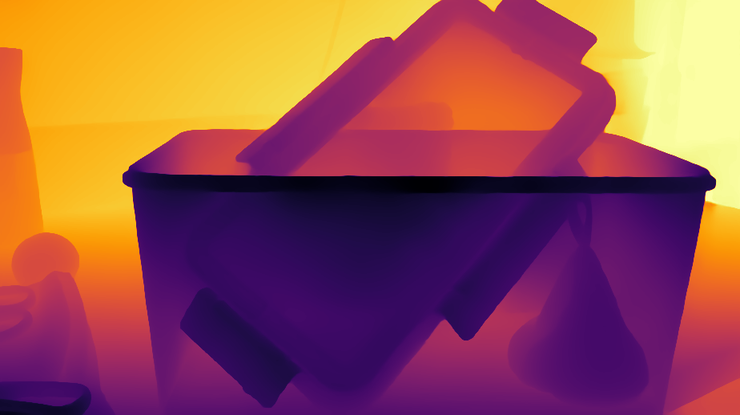

Aperture Radius (ap) ap = 06.00
Small
Large
Our Vid2Bokeh pipeline synthesizes physically accurate bokeh directly from multi-view light fields, avoiding the depth estimation errors that cause artifacts in depth-based rendering. Drag the sliders below to compare a depth-based baseline against our method on the same real-world capture, with independent control over aperture size and focal plane.


Aperture Radius (ap) ap = 06.00
Focal Plane (slope) slope = +0.000
Aperture Radius (K) K = 18.0
Focal Plane (var) var = +0.000
Use the sliders below to explore variations in focal plane and aperture radius. These bokeh samples are directly generated from our Vid2Bokeh pipeline.
Note: Minor artifacts are visible due to video compression and the reduced resolution used to keep the file size small.
Focal Plane
Aperture Radius
Direct side-by-side comparison of our method against a depth-based baseline (BokehDiff). Adjust aperture and focal plane independently on each panel to observe where depth estimation errors cause artifacts, while our approach maintains geometrically faithful bokeh.

Aperture Radius (K) K = 8.0
Focal Plane (var) var = 0.00
Δ Aperture Radius dd = +0.00
Δ Focal Plane ds = +0.00
Interactively explore our method's joint control of focal plane and aperture radius. Drag the sliders to see how focus and depth-of-field change on real photographs.
Note: Focal-plane adjustment is highly sensitive, as most positions will lead to out-of-focus results when the input image has a sparse depth distribution.
Δ Focal Plane (Relative Shift)
Δ Aperture Radius (Relative Change)